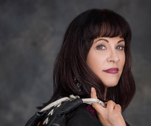
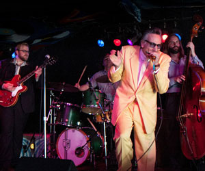
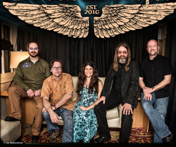
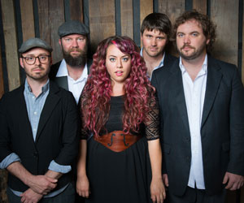

Janiva Magness is one of the premier blues and R&B singers in the world today. Her voice possesses an earthy, raw honesty born from her life experience, including growing up in the foster care system of Detroit. Her talent as a singer and songwriter have earned her numerous awards and accolades, including Contemporary Blues Female Artist of the Year five times (2006, 2007, 2009, 2013, and 2015), Song of the Year for “I Won’t Cry” from her recording Stronger For It (2013), as well as the coveted 2009 Blues Music Award for B.B. King Entertainer of the Year (making her only the second woman to ever win this award, Koko Taylor being the first). Janiva’s 2016 album "Love Wins Again" is nominated for a Grammy in the category of Best Contemporary Blues Album. "Love Wins Again" is another evolutionary step for the soulful, elegant, award-winning singer-songwriter. Its 11 core songs and two bonus tracks are built on a sonically sophisticated architecture that’s in full service of Magness’ remarkably flexible and generous voice—which can flow smoothly as champagne or churn up gravel on command. The album’s title is a mantra that resonates throughout: the concept of love as a physical, psychic and spiritual force that has the strength to conquer negativity, sadness and personal demons. Magness is currently up for Contemporary Blues Female Artist of the Year in the Blues Music Awards. Tonight, Magness will be joined by Zach Zunis (guitar), Garrett Deloian (guitar), Gary "Scruff" Davenport (bass), and Matt Tecu (drums).
-  2MarchThis band
-
 4AprilThat Band
4AprilThat Band -
.jpg) 23JanAnother cool band
23JanAnother cool band - 
2Juneneeto
-  3JulyThis one too
-  23JanBut not this one!
aniva Magness is one of the premier blues and R&B singers in the world today. Her voice possesses an earthy, raw honesty born from her life experience, including growing up in the foster care system of Detroit. Her talent as a singer and songwriter have earned her numerous awards and accolades, including Contemporary Blues Female Artist of the Year five times (2006, 2007, 2009, 2013, and 2015), Song of the Year for “I Won’t Cry” from her recording Stronger For It (2013), as well as the coveted 2009 Blues Music Award for B.B. King Entertainer of the Year (making her only the second woman to ever win this award, Koko Taylor being the first). Janiva’s 2016 album "Love Wins Again" is nominated for a Grammy in the category of Best Contemporary Blues Album. "Love Wins Again" is another evolutionary step for the soulful, elegant, award-winning singer-songwriter. Its 11 core songs and two bonus tracks are built on a sonically sophisticated architecture that’s in full service of Magness’ remarkably flexible and generous voice—which can flow smoothly as champagne or churn up gravel on command. The album’s title is a mantra that resonates throughout: the concept of love as a physical, psychic and spiritual force that has the strength to conquer negativity, sadness and personal demons. Magness is currently up for Contemporary Blues Female Artist of the Year in the Blues Music Awards. Tonight, Magness will be joined by Zach Zunis (guitar), Garrett Deloian (guitar), Gary "Scruff" Davenport (bass), and Matt Tecu (drums).
.jpg)
aniva Magness is one of the premier blues and R&B singers in the world today. Her voice possesses an earthy, raw honesty born from her life experience, including growing up in the foster care system of Detroit. Her talent as a singer and songwriter have earned her numerous awards and accolades, including Contemporary Blues Female Artist of the Year five times (2006, 2007, 2009, 2013, and 2015), Song of the Year for “I Won’t Cry” from her recording Stronger For It (2013), as well as the coveted 2009 Blues Music Award for B.B. King Entertainer of the Year (making her only the second woman to ever win this award, Koko Taylor being the first). Janiva’s 2016 album "Love Wins Again" is nominated for a Grammy in the category of Best Contemporary Blues Album. "Love Wins Again" is another evolutionary step for the soulful, elegant, award-winning singer-songwriter. Its 11 core songs and two bonus tracks are built on a sonically sophisticated architecture that’s in full service of Magness’ remarkably flexible and generous voice—which can flow smoothly as champagne or churn up gravel on command. The album’s title is a mantra that resonates throughout: the concept of love as a physical, psychic and spiritual force that has the strength to conquer negativity, sadness and personal demons. Magness is currently up for Contemporary Blues Female Artist of the Year in the Blues Music Awards. Tonight, Magness will be joined by Zach Zunis (guitar), Garrett Deloian (guitar), Gary "Scruff" Davenport (bass), and Matt Tecu (drums).